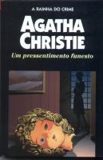

Um Pressentimento Funesto
By the Pricking of My Thumbs
Envolver-se em tramas perigosas é uma especialidade do casal de aventureiros Tommy e Tuppence Beresford. Desta vez, durante uma visita a um asilo de senhoras, Tuppence vê um quadro que retrata uma casa que não lhe parece totalmente estranha. Lá, também conhece uma anciã que lhe fala de um menino morto escondido em uma chaminé. Pouco tempo depois, a velha senhora abandona o asilo sem dar qualquer explicação. Disposta a descobrir o paradeiro dela, Tuppence decide encontrar a casa misteriosa e acaba deparando-se com um assassino perverso.